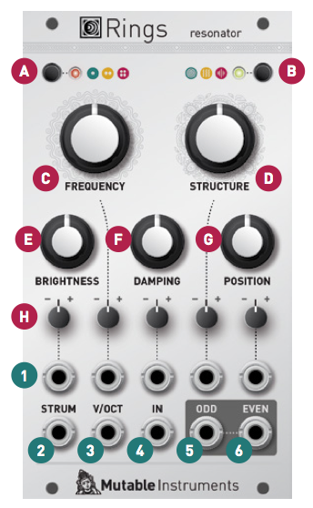

Overview
Rings is a resonator, the essential ingredient at the core of several physical modelling techniques. It transforms an external, unpitched excitation audio signal (such as a click, a burst of noise, or whatever is captured by a contact microphone) into a full-bodied pitched sound. Rings is the bar, the tube or the bunch of strings you cause to vibrate with an external signal.
Installation
Rings is designed for Eurorack synthesizer systems and occupies 14 HP of space. It requires a -12V/+12V supply (2x5 pin connector), drawing 5mA from the -12V rail and 120mA from the +12V rail. The red stripe of the ribbon cable must be oriented on the same side as the "Red stripe" marking on the printed circuit board.
Rings' basics
Polyphony and synthesis method
How the module operates is governed by two settings controlled by buttons at the top of the module. Once these are set, no hidden mysteries!

The first button selects the polyphony of the module: one, two, or four notes. Enabling four notes polyphony doesn't mean that four CV input jacks will magically appear on the module, but simply that four notes played in sequence will nicely overlap without cutting each other's tails. To play chords, you will need to "strum" the module by playing a rapid sequence of notes - something you might have already encountered with Braids' PLUK model. Note that the module might reduce the number of harmonics in the generated signals to cope with the higher polyphony.
The second button selects the three available types of resonators. They are:
Modal synthesis works by simulating the phenomena of resonance at play in vibrating structures, that is to say the way a string or plate (for instance) will absorb certain frequencies while it will "ring" at some other frequencies, called the modes. When we pluck a string, strike a drum or blow in a tube, the short burst of energy of the blow/impact contains many frequencies. Some of these fall outside of the modes, and are absorbed. Some of these excite the modes, producing a stable, pitched sound. Each mode corresponds to a harmonic or partial in the spectrum of the sound, and is modelled by a band-pass filter. The Q factor of the filter determine how sustained the oscillations of the corresponding partial are. Various materials or structures are characterized by different relationships between the frequencies of their modes, which Rings recreates.
Some interesting string instruments (such as the sitar or sarod), make use of strings that are not directly struck/plucked by the musician, but which are just responding to vibration of the other strings, and add extra overtones or undertones to it. Rings simulates this phenomenon with a bunch of virtual strings (made with comb filters), allowing the addition of extra tones to an incoming audio signal. The tuning ratio between these strings can be altered.
This last method is perhaps the most familiar (in appearance!), since it is based on the extended Karplus-Strong method: the excitation signal is sent to a comb filter with an absorption filter, simulating the multiple reflection of a wave propagating on a string and being absorbed at its ends. However, to bring more variety to the sound, Rings adds three extra ingredients to this classic: a delay-compensated all-pole absorption filter creating more drastic plucking effects, delay time modulation emulating the sound of instruments with a curved bridge (like the sitar or tanpura), and all-pass filters in the delay loop, shifting the position of the partials and recreating the tension of piano string or completely bonkers inharmonic timbres.
Making the right connections
Ideally, Rings would need three input signals:
- A trigger signal on the STRUM input, which indicates that the currently playing note should fade away, and that a new note is starting.
- A CV signal on the V/OCT input, which controls the frequency of the note.
- An audio signal on the IN input, which will hit, strike or caress the resonator.
Because it might not always be possible to get these three signals in your setup, Rings makes the following assumptions:
First, if nothing is patched in the IN audio input, the module will synthesize an excitation signal whenever a note is strummed. This excitation signal is either a low-pass filtered pulse, or a burst of noise depending on the resonator type.
Secondly, if nothing is patched in the STRUM audio input, the module will determine that a new string should be strummed either by:
- Detecting note changes on the V/OCT input, or
- Detecting sharp transients within the IN audio signal if nothing is patched in the V/OCT input.
If there should be one take-home (take-to-the-studio?) message from this, it is that you can perfectly play Rings with just one CV output taken from a sequencer or S&H module: the note changes on the CV input will be interpreted as note changes; and the module will produce a suitable excitation signal internally for these note changes to be heard!
Controls, inputs and outputs

A. Polyphony setting. Selects between monophonic, duophonic and quadriphonic operation.
B. Resonator type. Selects between modal, sympathetic and string resonators.
C. Coarse frequency, adjusted by semitone increments. This control spans 5 octaves.
D. Harmonic structure. With the modal resonator, this parameter controls the frequency ratio between partials (and by doing so, the perceived structure - plate, bar, string). With the sympathetic string resonator, this parameter controls the set of frequency ratios between all strings (with virtual notches at octaves or fifths). Finally, with the modulated/inharmonic string resonator, this parameter controls the amount of modulation and detuning of the partials.
E. Brightness. Adjusts the level of higher harmonics in the signal, by the simultaneous action of a low-pass filter on the exciter signal (closed at 8 o'clock, fully open at 12 o'clock), and the damping filter (or Q factor of the higher modes) on the rest of the course of the potentiometer. Low values simulate materials like wood or nylon. High values simulate materials like glass or steel.
F. Damping. Controls the decay time of the sound, from less than 100ms to about 10s.
G. Excitation position. Controls on which point of the string/surface the excitation is applied. Applying the excitation right in the middle of the surface will cause, by symmetry, the even harmonics to cancel each other, resulting in a "hollow" sound reminiscent of a square wave. This setting will remind you of the PWM control on a square oscillator – or of the comb-filtering effect of a phaser.
H. Attenuverters for the CV inputs.
1. Resonator parameters CV inputs. Note that the FREQUENCY CV input is normalized to a 1/12 V voltage, allowing its attenuverter to be used as a fine frequency control when no patch cable is inserted.
2. Strumming trigger input, for polyphonic operation. Whenever a trigger is received on this input, the module freezes the currently playing voice and lets it decay, and starts a note on the next voice. Normalized to a step detector on the V/OCT input and a transient detector on the IN input.
3. V/oct CV input. Controls the main frequency of the resonator.
4. Audio INPUT for the excitation signal. Modular levels are expected! Normalized to a pulse/burst generator that reacts to note changes on the V/OCT input.
5. Odd and even audio outputs. In monophonic mode, these two outputs carries two complementary components of the signal (odd and even numbered partials with the modal resonator, dephased components due to picking position and pickup placement with the string resonators). In polyphonic mode, splits the signal into odd and even numbered strings/plates. Note that you need to insert a jack into each output to split the signals: when only one jack is inserted, both signals are mixed together.
Advanced topics
Calibration procedure
To calibrate the unit:
- Disconnect all CV inputs.
- Connect the note CV output of a well-calibrated keyboard interface or MIDI-CV converter to the V/OCT input.
- Connect a patch cable to the FREQUENCY CV input. Leave the other end of the cable unplugged (this prevents the internal connection to +/- 1 semitone to be activated).
- Hold both the polyphony and resonator type buttons for two seconds. This is the "secret handshake" to enter the calibration procedure. The first LED blinks in orange.
- Play a C2 note, or send a 1V voltage from your CV source.
- Press the polyphony button. The second LED blinks in orange.
- Play a C4 note, or send a 3V voltage from your CV source.
- Press the polyphony button to complete the calibration. If the calibration is successful, the module returns to its normal state. Otherwise, the two LEDs will blink in RED for a couple of seconds.
Firmware update procedure
Unplug all CV inputs/outputs from the module. Connect the output of your audio interface/sound card to the IN input. Set the FREQUENCY (C) knob to 12 o'clock. Power on your modular system with the polyphony button (A) pressed. Both LEDs will blink in orange.
Make sure that no additional sound (such as email notification sounds, background music etc.) from your computer will be played during the procedure. Make sure that your speakers/monitors are not connected to your audio interface - the noises emitted during the procedure are aggressive and can harm your hearing. On non-studio audio equipment (for example the line output from a desktop computer), you might have to turn up the gain to the maximum.
When you are all set, play the firmware update file into the module. While the module receives data, the first LED will blink in green, and the second LED will monitor the signal level. Signal reception is optimal when the second LED is lit in green or yellow. Try adjusting the FREQUENCY knob to change gain. The module periodically pauses with both LEDs lit in orange to write data on its permanent memory. When the end of the audio file is reached, the module automatically restarts - if it is not the case, please retry the procedure from the beginning.
In case the signal level is inadequate, the LEDs will blink in red with an alternating pattern. Press the polyphony button (A) and retry with a higher gain. If this does not help, please retry the procedure from another computer/audio interface, and make sure that no piece of equipment (equalizer, FX processor) is inserted in the signal chain.
Common issues
The FM attenuverter does not allow fine-tuning
A symptom of incorrectly performing (or forgetting) step 3 of the calibration procedure is that the FREQUENCY attenuverter will no longer work as a fine tuning control when the corresponding input is left unpatched.
Re-calibrate the module by following the instructions carefully.
The module makes a continuous noise
... even when nothing is patched in the STRUM or IN input.
Recalibrate the normalization detector with the following procedure:
- Make sure nothing is plugged in the module (no input, no output).
- Hold the two buttons simultaneously, until the first LED blinks in orange (the second LED is then off). Release the buttons.
- Again, hold the two buttons simultaneously, until the 2 LEDs blink in red. Release the buttons.
- Press shortly on the first button. The 2 LEDs blink in green.
- Press shortly on the first button. The module should go back to normal.
The tuning is very odd in modal synthesis mode
The frequency of the first mode (and thus, of the first harmonic of the spectrum) corresponds simply and predictably to the root note set by the FREQUENCY knob, transposed by the V/OCT input.
If the module is configured to generate a harmonic spectrum (which means that the spectrum has harmonics at f0, 2 x f0, 3 x f0, 4 x f0 ; or equivalently, that the generated waveform is periodic), the perceived pitch is the same thing as the frequency of the first harmonic.
If the module is configured to generate a non-harmonic spectrum (which means the waveform does not repeat itself, and the spectrum is made of partials in non-integer frequency ratios), then the pitch is a matter of perception - two people might disagree as to which note is actually produced.
If you have a keyboard with a ring modulator, try a patch in which the two oscillators are detuned (not by an exact octave or fifth - something inbetween) and ring-moded. Now play an A on the keyboard. Does it really sound like an A or like some dissonant bell-ish tone? This bellish tone will perfectly and evenly follow what you play on the keyboard, it’s just that it’ll sound like a dissonant chord - not like a pure, periodic waveform. You might also be familiar with this phenomenon if you tried to identify the notes played by bells or cymbals, or a big sheet of metal or a plastic bucket. Rings can easily make such sounds - there’s only one position of STRUCTURE that generates a pure, harmonic spectrum (but it’s fairly easy to find it, because the pot has a “virtual notch” at this position).